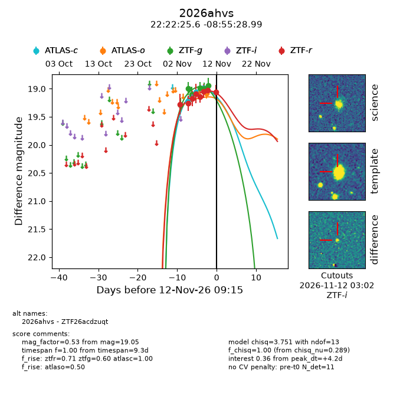
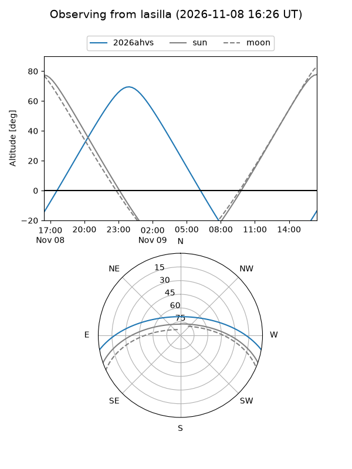
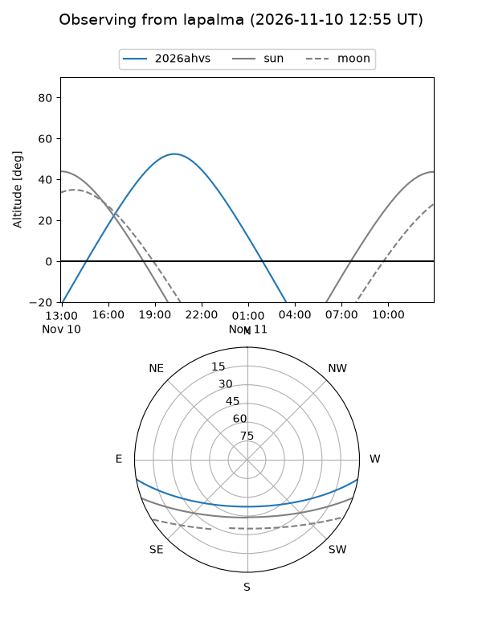
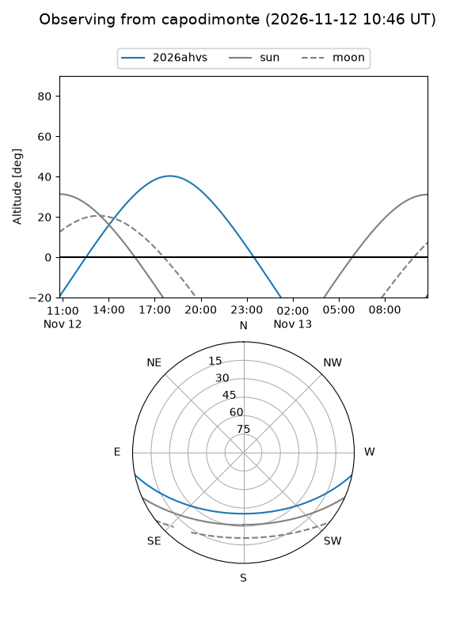
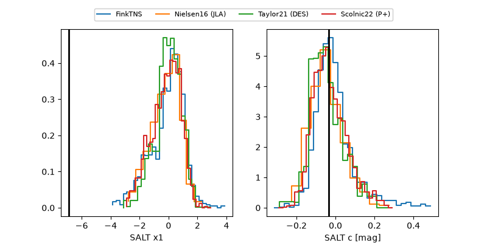

2026ahvs
Target 2026ahvs at 2026-11-12 09:20
Aliases and brokers:
FINK-ZTF: ztf.fink-portal.org/ZTF26acdzuqt
Lasair-ZTF: lasair-ztf.lsst.ac.uk/objects/ZTF26acdzuqt
ALeRCE-ZTF: alerce.online/object/ZTF26acdzuqt
YSE-PZ: ziggy.ucolick.org/yse/transient_detail/2026ahvs
TNS name: wis-tns.org/object/2026ahvs
Direct TNS query: direct search
alt names
ZTF26acdzuqt (ztf,fink_ztf)
2026ahvs (tns,yse)
Coordinates:
equatorial (ra, dec) = 335.6065,-8.92472
equatorial (HMS+DMS) = 22:22:25.57,-08:55:28.99
galactic (l, b) = (53.1710,-50.40491)
Flags:
peak dt: +4.2
Photometry:
last atlasc=18.99, atlaso=19.08, ztfg=18.94, ztfr=19.05
3 atlasc, 1 atlaso, 6 ztfg, 8 ztfr detections
Lightcurve

Visibility



Additional plots
